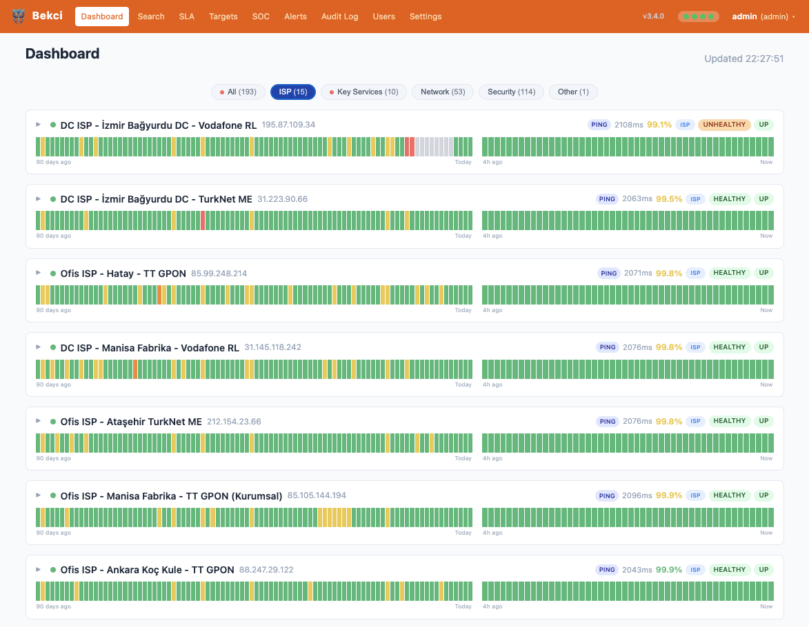

The watchman that only wakes you when it's real.
Bekci was born out of frustration with monitors that take a weekend to install and a full-time job to keep alive. Bekci, on the other hand, is one Go binary and one port — quick to deploy, painless to run, and genuinely fun to tune. Checks corroborate through real logic gates and a failure must sustain itself before the alarm fires, so it only ever wakes you when it's real. One box, 1000+ hosts.
Go 1.25 · Vue 3 + Vite · SQLite (WAL) · Docker · single self-contained binary

Everything a watch-floor needs, on board.
Beyond the checks, Bekci ships the operational surface security teams actually run on.
Zero false positives, wired into the board.
Most uptime monitors page you on a single failed check. Bekci routes independent signals through real AND/OR logic and demands sustained failure — driving false positives toward zero. Flip the inputs and watch the gates resolve.
All signals healthy. Nothing to report.
Independent signals must agree
Combine checks with boolean logic — (TCP AND HTTP) OR PING. Groups are joined by AND/OR internally; across groups the logic is OR. Nestable and composable, so one flaky probe can't speak for the whole target.
A blip is not an outage
A condition must fail N times inside a time window before it counts as down — fail_count × fail_window. A single dropped packet or momentary timeout is ignored. The window's floor is fail_count × interval.
No alert storms
Per-rule alert cooldown, a configurable re-alert interval for issues still firing, and a recovery cooldown — so a target that flaps up and down can never bury you in notifications.
Eight ways to test a target.
Each check populates the board as its own component, yielding a clean pass or fail that feeds the corroboration logic.
Built to watch right now — not to relive last year.
Bekci is a real-time tactical monitor. The point is the 4-hour bar at 5-minute resolution: what is wrong this minute. The 90-day bar is there for context and trend — just enough history to catch a slow degrade, not a year of metrics to trawl through when the pager goes off.
4H Tactical — the live view
48 segments, one per 5 minutes. This is where you live: watch an incident start, escalate and recover in near-real time. Correct, current status is the whole job.
90D Context — the trend
90 segments, one per day. Enough history to spot a target that's quietly degrading before it becomes an outage — deliberately not an archive to go digging through. Fast, not buried in dashboards.

One container. One binary. One port.
Bekci exists because the alternatives were a chore — sprawling installs, fragile upgrades, config you're afraid to touch, an afternoon lost every time something needs maintenance. This is the opposite on purpose: clone, compose, and it's watching. No agents on your targets, no external services, no separate database to babysit — quick to stand up, painless to keep running, and actually enjoyable to tune.
- Single Go binary with the Vue 3 UI embedded — nothing else to wire up.
- SQLite storage in WAL mode. Your data stays on your host.
- Scales to 1000+ hosts from one container on modest hardware.
- MIT licensed, open source. Read every line, fork it, own it.
$ git clone https://github.com/okoker/bekci.git $ cd bekci $ docker compose up -d # then open http://localhost:65000